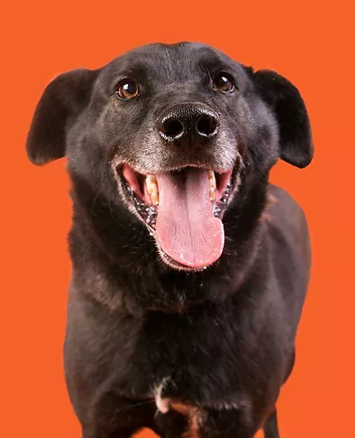
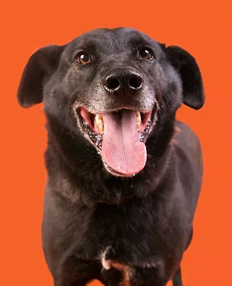
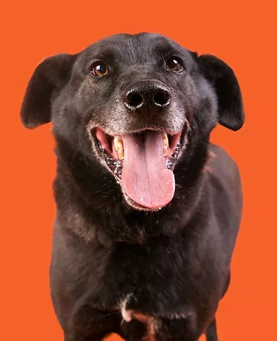
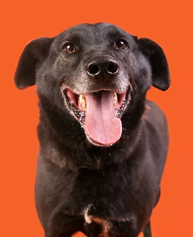

Vários estudos já mostraram o bem que um pet faz à saúde das pessoas. Além disso, ter um animalzinho em casa resulta em passeios que estimulam os exercícios, melhoram a pressão sanguínea e evita que o dono apresente indícios de depressão, ansiedade ou estresse
Mandamos nossos pet disponiveis por email